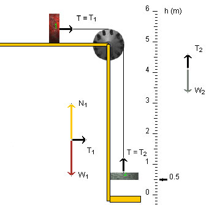

Yes, T = T1 = T2.
Explanation
The free-body diagrams for the two blocks in the diagram above correspond to the situation in which the blocks are moving.
Have a look at Tension under Get Information. There it will be explained that the tension in a string is equal to the magnitude of the force that the string is exerting on whatever it is attached to. Thus the tension in the string to the left of the pulley is equal to T1, the force applied by the string to block 1. Similarly, the tension in the string below the pulley is equal to T2, the force applied by the string to block 2.
The tension in a string running over a frictionless and massless pulley is the same on both sides of the pulley, and the tension in the string is the same everywhere else in the string since the string is massless. Thus the tension in the string is a constant. Let's call it T. Combining all this we get the result that
T = T1 = T2.